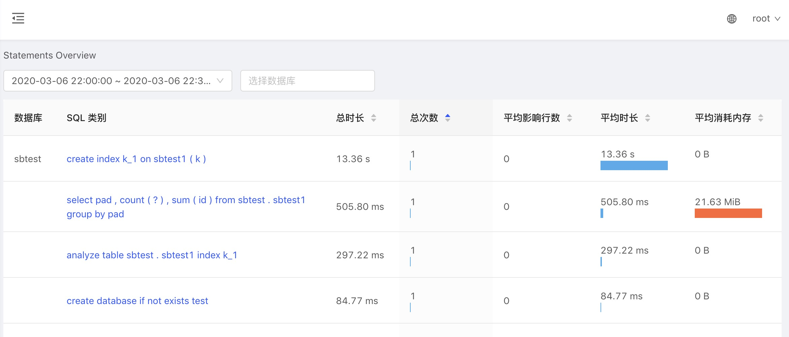

2.2 可视化 Statements
在上一节介绍了怎样通过 KeyVis 来识别 TiDB 的业务的模式，本节主要带领读者体会怎样通过 Dashboard 的 Statements 信息来分析执行 SQL 情况，从而达到帮助运维人员快速定位 SQL 性能问题。
Statements 是什么
Statement，即 SQL 语句。
针对 SQL 性能相关的问题，TiDB Dashboard 提供了 Statements 用来监控和统计 SQL。例如页面上提供了丰富的列表信息，包括延迟、执行次数、扫描行数、全表扫描次数等，可以用来分析哪些类别的 SQL 语句耗时过长、消耗内存过多等情况，帮助用户定位性能问题。
为什么要用可视化 Statements
TiDB 已经有很多性能排查工具了，但我们在应对各类场景时，仍发现它们有一些不足，如下：
- Grafana 不能排查单条 SQL 的性能问题
- Slow log 只能看到慢查询
- General log 本身对性能有一些影响
- Explain analyze 只能查可以复现的问题
- Profile 只能查整个实例的瓶颈
所以有了可视化 Statements 直接可以在页面观察 SQL 执行情况，也不需要到系统表中去查询了，方便运维人员。
查看 Statements 整体情况
登录后，在左侧点击「SQL 语句分析」即可进入此功能页面。在时间区间选项框中选择要分析的时间段即可得到该时段所有数据库的 SQL 语句执行统计情况，如果只关心某些数据库，则可以在第二个选项框中选择相应的数据库对结果进行过滤，支持多选。
结果以表格的形式展示，并支持按不同的列对结果进行排序，如下图所示。
- 选择一份分析的时间段
- 支持按数据库过滤
- 支持按不同的指标排序
注：这里所指的 SQL 语句实际指的是某一类 SQL 语句。语法一致的 SQL 语句会规一划为一类相同的 SQL 语句。
比如 SELECT * FROM employee WHERE id IN (1, 2, 3) 和 select * from EMPLOYEE where ID in (4, 5) 最后都会被规一划为 select * from employee where id in (...)。

目前的已知问题:
- 对于 TiDB 内部 SQL 语句来说，数据库这一列内容为空
- 选择时间段时，只能从下拉框中选择固定的时间段，暂不支持自定义的任意时间段
查看 Statement 详情页
在 SQL 类别列点击某类 SQL 语句，可以进入该 SQL 语句的详情页查看更详细的信息，以及该 SQL 语句在不同节点上执行的统计情况。
单个 Statement 详情页关键信息如下图所示。
- SQL 执行总时长
- 平均影响行数（一般是写入）
- 平均扫描行数（一般是读）
- 各个节点执行指标（可以快速定位出某个节点性能瓶颈）

Statements 参数配置
tidb_enable_stmt_summary：Statements 功能默认开启，通过设置系统变量打开，例如：
set global tidb_enable_stmt_summary = true;tidb_stmt_summary_refresh_interval：performance_schema.events_statements_summary_by_digest 表的的清空周期，单位是秒 (s)，默认值是 1800，例如：
set global tidb_stmt_summary_refresh_interval = 1800;tidb_stmt_summary_history_size：performance_schema.events_statements_summary_by_digest_history 表保存每种 SQL 的历史的数量，默认值是 24，例如：
set global tidb_stmt_summary_history_size = 24;
由于 Statements 信息是存储在内存表中，为了防止内存问题，需要限制保存的 SQL 条数和 SQL 的最大显示长度。这两个参数需要在 config.toml 的 [stmt-summary] 类别下配置：
- 通过 max-stmt-count 更改保存的 SQL 种类数量，默认 200 条。当 SQL 种类超过 max-stmt-count 时，会移除最近没有使用的 SQL。
- 通过 max-sql-length 更改 DIGEST_TEXT 和 QUERY_SAMPLE_TEXT 的最大显示长度，默认是 4096。
注: tidb_stmt_summary_history_size、max-stmt-count、max-sql-length 这些配置都影响内存占用，建议根据实际情况调整，不宜设置得过大。
总之，有了可视化 Statements 就可以快速定位某个 SQL 性能问题，之后也可以可以通过前面章节介绍的 KeyVis 来进行分析。